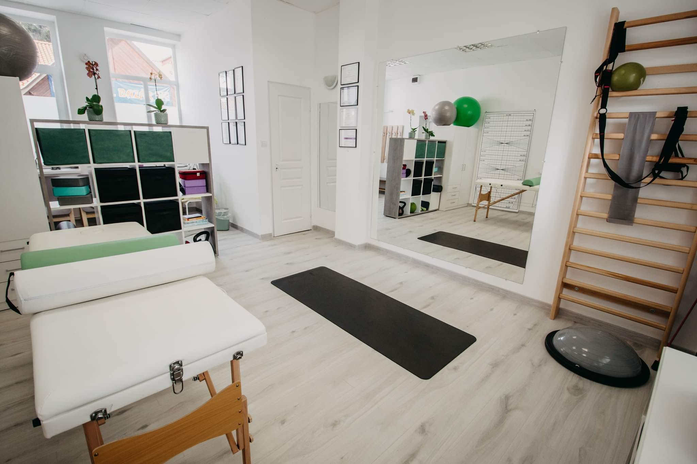

Tudatos mozgás.
Hosszú távon és fájdalommentesen.
Mozgásszervi panaszok prevenciója és rehabilitációja a Physio & More rendelőben — egyéni felmérésen alapuló programmal, Tiszafüreden.
Bertalan-Varga Réka
Gyógytornász · 3D YOGA & TripleX oktató
„Szakmámat hivatásnak tekintem és küldetésemnek érzem, hogy az emberekben tudatosuljon, hogy egészséges életmóddal és testmozgással tudnak a legtöbbet tenni mozgásszerveik egészségéért. A különböző gerincproblémák gyógyítása, sportsérülések és balesetek utáni rehabilitáció mellett munkám fő profilja a mozgásszervi panaszok prevenciója, többek között az általam tartott csoportos 3D YOGA és TripleX Training foglalkozások által.”
- Gyógytornász diploma
- Triplex gerincterápia
- 3D YOGA oktató
- TripleX Training oktató
Szakmai tapasztalat és tanulmányok
B-A-Z Megyei Központi Kórház és Egyetemi Oktatókórház — traumatológiai osztály, SVANTO (stroke, vascularis, neurológiai és toxikológiai osztály), ambuláns ellátás.
Népegészségügyi Kar — ápolás és betegellátás alapszak, gyógytornász szak.
Tizenkét fókuszált terület.
Egy közös elv: pontosság.
Felmérés. Terv. Lépésről lépésre haladás. A klasszikus mozgásterápia mellett célzott kezelések — pontosan annyi, amennyi szükséges.
Akik már
jártak nálam.
Szakmai ajánlások és páciensek visszajelzései.
Gyógymasszőrként szeretettel ajánlom Rékát mindenkinek! Kiváló szakember, precíz, nagy tudású, bátran ajánlom a vendégeimnek!
Réka munkája nagyon precíz, és úgy gondolom, hogy szakmailag nagyon ott van. Odafigyel, hogy mi jó nekünk és mi nem. Felhívja a figyelmet az interneten található helytelenül kivitelezett bemutató gyakorlatokra is. Köszönjük a munkádat, Réka!
Réka személyében egy nagyon kedves, agilis szakembert ismerhettem meg, aki nyitott az újdonságokra, és holisztikus szemlélettel tekint a mozgásszervi problémákra. Már egy kezelés is felér nála a csodával.
Az árak — átláthatóan.
Az alábbi alkalmi díjak tájékoztató jellegűek. Bérletek és személyre szabott csomagok igény szerint.
Az első lépés
egy beszélgetés.
Írja le pár sorban, mi a panasz — vagy hívjon telefonon. Az első alkalom felmérés, nem elkötelezettség.